Planning, memory and state
1. How does an agent break a complex task into smaller subtasks
Mechanism intermediate
TL;DR. Either ask the model to emit a plan/todo list up front, or decompose lazily and revise; store it as structured tasks that can be marked in-progress/done.
Key points.
- Model emits a plan/todo list.
- Or decompose lazily and revise.
- Store as structured tasks with status.
Concept. Either the model is asked to emit a plan/todo list up front, or the agent decomposes lazily and revises. Often the decomposition is stored as structured tasks the agent can mark in-progress/completed.
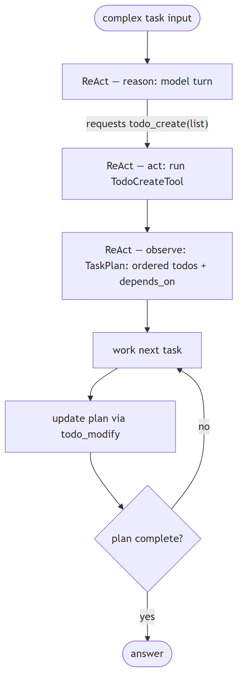
In Jiuwen. Decomposition is model-driven through todo tools, not an algorithmic planner: the model's reply requests a todo-create call (prompted by the planning rail's guidance), the ReAct loop executes it, and the tool validates and persists the list. There is no separate planner component producing a plan graph.
Under the hood
Implementation
Model-driven todo tools, not an algorithmic planner. The model's answer requests a todo_create tool call (prompted by the rail's guidance to plan when the task warrants it); the ReAct loop then executes it, and the tool validates and persists the list. TodoCreateTool takes a JSON array of {id, content, activeForm, description} and persists a todo.json per session; TaskPlan stores the goal plus ordered TodoItems with depends_on and resolves the next task. TaskPlanningRail registers the todo tools and injects planning guidance, and the Plan agent mode adds a task_tool to delegate subtasks to subagents.
Code anchors
| Code anchor | What it points to |
|---|---|
agent-core/openjiuwen/harness/tools/todo.py:193 |
TodoCreateTool |
agent-core/openjiuwen/harness/tools/todo.py:113 |
per-session todo.json |
agent-core/openjiuwen/harness/schema/task.py:97 |
TaskPlan |
agent-core/openjiuwen/harness/rails/task_planning_rail.py:31/108/152 |
rail, tool registration, guidance |
agent-core/openjiuwen/harness/rails/agent_mode_rail.py:645 |
plan-mode task_tool |
2. How do you handle a task where the plan needs to change mid-execution based on a tool's result
Mechanism intermediate
TL;DR. Allow plan mutation during the run — add, reorder, cancel, replace tasks — and support steering with new instructions; keep the authoritative plan separate from live state.
Key points.
- Mutate: add/reorder/cancel/replace tasks.
- Steer with new instructions.
- Reconcile plan vs live state.
Concept. Allow plan mutation during the run: the agent can add, reorder, cancel, or replace tasks, and can be steered by new instructions. Track the authoritative plan separately from the live state so they can be reconciled.
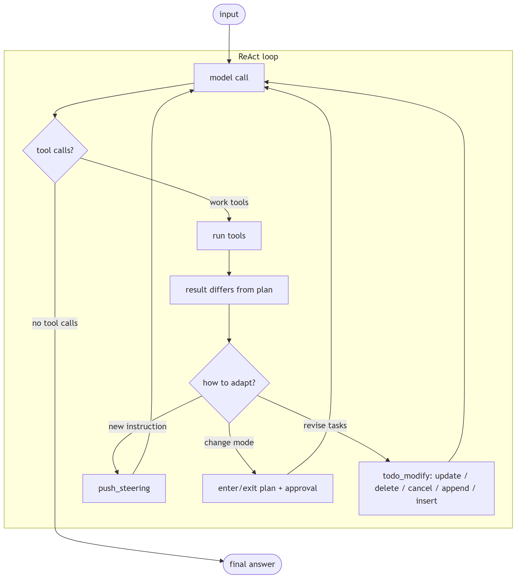
In Jiuwen. Several mechanisms: a todo tool supports update/delete/cancel/append/insert with a single-in-progress invariant; the planning rail reconciles todos against the authoritative plan each outer round; and steering messages inject new instructions that are drained before the next model call. So the plan can be revised mid-execution while staying consistent.
Under the hood
Implementation
Several mechanisms. TodoModifyTool supports update/delete/cancel/append/insert operations with a single-in-progress invariant. TaskPlanningRail._sync_todos_from_plan reconciles todos against the authoritative TaskPlan each outer round. Steering messages inject new instructions and are drained before each model call. Mode transitions enter/exit plan with an approval gate.
Code anchors
| Code anchor | What it points to |
|---|---|
agent-core/openjiuwen/harness/tools/todo.py:473 |
TodoModifyTool operations |
agent-core/openjiuwen/harness/tools/todo.py:621 |
single-in-progress invariant |
agent-core/openjiuwen/harness/rails/task_planning_rail.py:320 |
reconcile todos from plan |
agent-core/openjiuwen/core/single_agent/agents/react_agent.py:2756 |
drain steering before model call |
agent-core/openjiuwen/core/single_agent/rail/base.py:687 |
ctx.push_steering |
agent-core/openjiuwen/harness/rails/agent_mode_rail.py:460 |
enter/exit plan gate |
jiuwenswarm/jiuwenswarm/agents/harness/code/rails/code_plan_approval_rail.py:74 |
product plan-approval rail |
3. What's the difference between a single-step agent and a multi-step planning agent
Compare basic
TL;DR. Two axes: single-step vs multi-step (how many model↔tool cycles) and reactive vs planning (whether an explicit plan is kept and updated).
Key points.
- Axis 1: number of model/tool cycles.
- Axis 2: explicit plan vs none.
- The two are independent.
Concept. Two axes, not one. Single-step vs multi-step is how many model↔tool cycles run. Reactive vs planning is whether the agent keeps an explicit plan (a todo list / task plan) that it creates up front and updates as it goes. Planning normally implies multi-step, but multi-step does not imply planning.
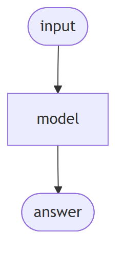
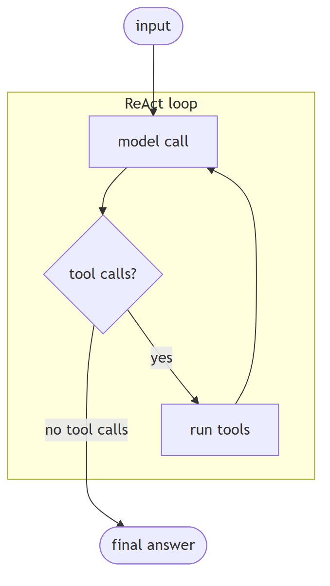
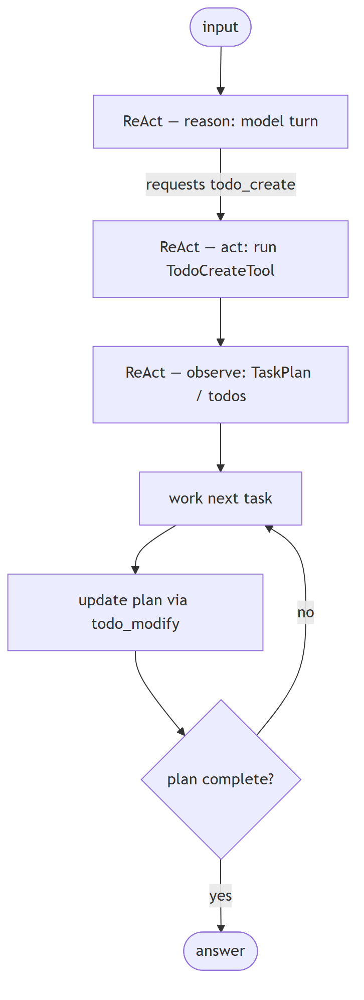
In Jiuwen. Jiuwen keeps the axes separate: the ReAct agent is multi-step reactive (loops with no explicit plan), while planning is an additive rail that registers todo tools and persists an ordered plan; the DeepAgent outer task loop adds the planning layer. So 'planning' is a rail you add to a reactive loop, not a different loop.
Under the hood
Implementation
Jiuwen keeps the two axes as separate layers. ReActAgent is multi-step reactive: it loops (bounded by max_iterations) with no explicit plan. Planning is an additive rail: TaskPlanningRail registers the todo tools and TaskPlan persists an ordered plan. DeepAgent's outer task loop is multi-step with planning: each outer round runs a full inner react_agent.invoke, while the persistent TaskPlan/todos carry state between rounds and TaskCompletionRail bounds the loop. So "multi-step" and "planning" are orthogonal.
Code anchors
| Code anchor | What it points to |
|---|---|
agent-core/openjiuwen/core/single_agent/agents/react_agent.py:2740 |
multi-step reactive loop |
agent-core/openjiuwen/core/single_agent/agents/react_agent.py:288 |
iteration bound |
agent-core/openjiuwen/harness/rails/task_planning_rail.py:31 |
planning layer (additive) |
agent-core/openjiuwen/harness/rails/task_planning_rail.py:108/152 |
registers todo tools, injects planning prompt |
agent-core/openjiuwen/harness/tools/todo.py:193 |
TodoCreateTool writes todo.json |
agent-core/openjiuwen/harness/schema/task.py:97 |
TaskPlan |
agent-core/openjiuwen/harness/deep_agent.py:2694 |
multi-step + planning (outer loop) |
agent-core/openjiuwen/harness/task_loop/task_loop_event_executor.py:222 |
one outer round = one inner invoke |
agent-core/openjiuwen/harness/rails/task_completion_rail.py:74 |
completion rail bounds the loop |
4. What's the planner-executor pattern, and when do you need it
Mechanism basic
TL;DR. A planner produces the steps; one or more executors carry them out, often with a supervisor re-planning — useful when planning needs a global view and execution is parallel/specialized.
Key points.
- Planner produces steps.
- Executors carry them out.
- Supervisor re-plans; parallel/specialized execution.
Concept. A planner produces the plan/steps; one or more executors carry them out, often with a supervisor re-planning. Useful when planning needs a global view while execution is parallelizable or specialized, and when separating "decide" from "do" improves reliability.
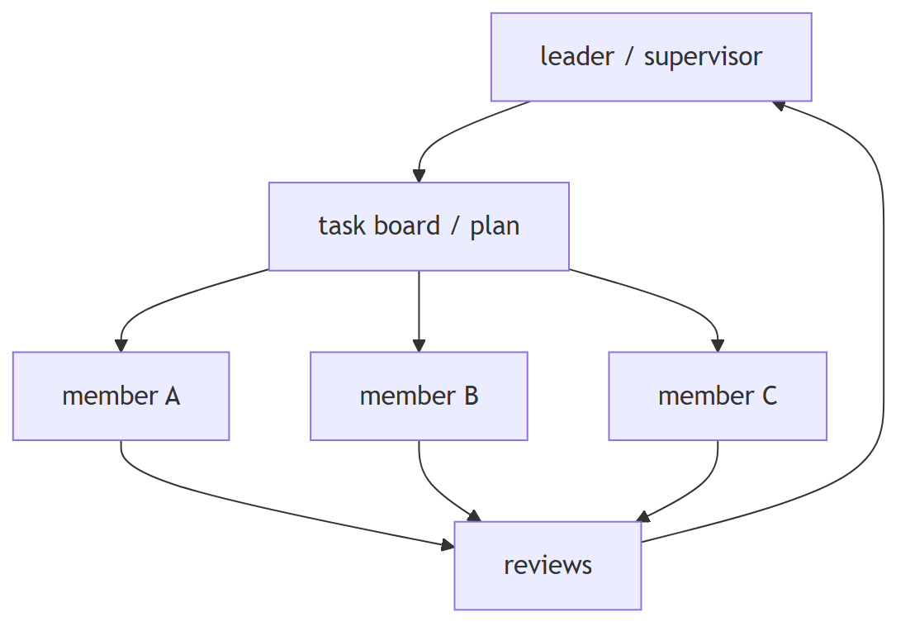
In Jiuwen. Jiuwen has three related patterns: a scheduled-dispatch leader (a scheduler scans the task board and hands pending tasks to idle members, then reviews); supervisor routing (a hierarchical team sends to a supervisor agent that calls sub-agents as tools); and a dedicated plan subagent. Planner-executor here is realized through team scheduling and supervision rather than a single class.
Under the hood
Implementation
Three patterns exist. (a) Scheduled-dispatch leader: TeamScheduler scans the task board and dispatches assigned pending tasks to idle members, then reviews. (b) Supervisor routing: HierarchicalTeam sends to a SupervisorAgent that calls sub-agents-as-tools via P2PAbilityManager. (c) A dedicated plan subagent invoked via task_tool.
Code anchors
| Code anchor | What it points to |
|---|---|
agent-core/openjiuwen/agent_teams/agent/scheduling/scheduler.py:92/208/239 |
TeamScheduler scan/dispatch/review |
agent-core/openjiuwen/core/multi_agent/teams/hierarchical_msgbus |
supervisor routing |
agent-core/openjiuwen/harness/subagents/plan_agent.py:88 |
dedicated plan subagent |
5. Critic or reflection loop
Mechanism intermediate
TL;DR. A self-check before returning: the primary agent drafts, a critic reviews against the request or rules, and the primary revises if it fails.
Key points.
- Draft, then critique.
- Revise on failure.
- Adds a verification step.
Concept. a self-check before returning. The primary agent drafts; a critic reviews it against the request or rules; if it fails, the primary revises. Adds a verification step for high-stakes output. Used for: financial summaries, compliance checks, high-stakes outputs where a wrong answer is costly.
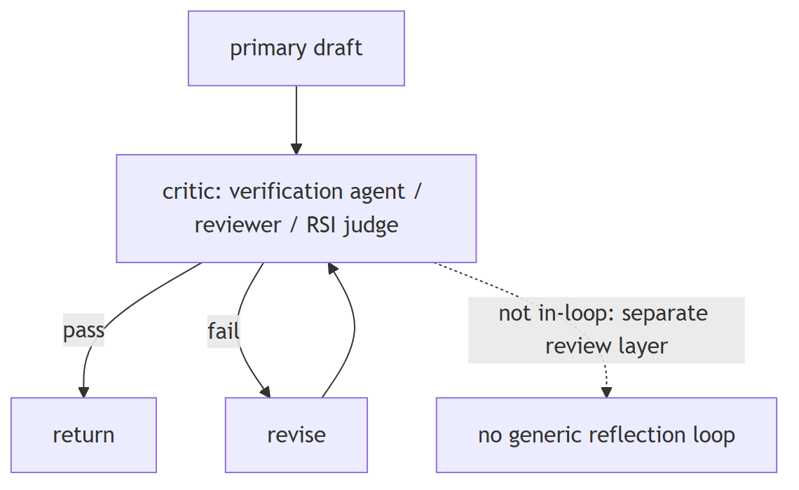
In Jiuwen. There is no generic draft-critique-revise loop in the single-agent ReAct path, but the pieces exist: a verification agent restricted to read-only tools that must show verbatim evidence and emit PASS/FAIL/PARTIAL, and a team reviewer that scores correctness.
Under the hood
Implementation
There is no generic draft→critique→revise loop in the single-agent ReAct path, but the pieces exist: a verification agent restricted to read-only tools that must show verbatim evidence and emit PASS/FAIL/PARTIAL; an agent_teams reviewer that scores Correctness/completeness with rework thresholds; and the RSI weighted-rubric judge. These run as separate review layers, not as an in-loop reflection that blocks generation.
Code anchors
| Code anchor | What it points to |
|---|---|
agent-core/openjiuwen/harness/rails/subagent/verification_rail.py:92 |
VerificationRail allowlist; agent-core/openjiuwen/harness/subagents/verification_agent.py:51 — PASS/FAIL/PARTIAL |
agent-core/openjiuwen/agent_teams/verification/reviewer.py:26/43/279 |
review dimensions + rework thresholds |
agent-core/openjiuwen/rsi/harness_rsi/evaluator/judger/scoring.py:193 |
weighted rubric judge |
6. How does a framework track state across multiple steps in an agent's execution
Mechanism intermediate
TL;DR. A state object threaded through (or held per session) that each step reads/writes; conversation history is usually separate from working state; persist via checkpoints.
Key points.
- Working state object per session.
- Separate conversation history from task state.
- Checkpoint for persistence.
Concept. A state object (dict or dataclass) is threaded through the steps or held per session; each node reads and writes it. Conversation history is usually separate from working state. Frameworks persist state via checkpoints so a run can be resumed or audited.
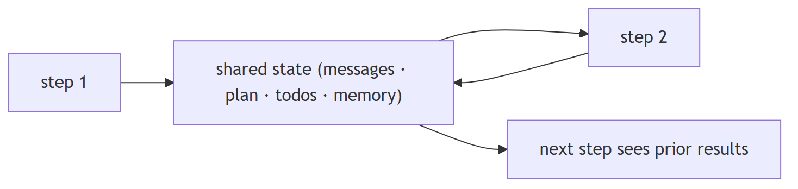
In Jiuwen. State lives in three checkpointed layers: the agent layer keeps a state collection (global plus agent state) inside the session; the workflow layer keeps a different state collection split into IO, global, comp, and workflow state; and conversation history is its own structure. Each layer is checkpointed independently.
Under the hood
Implementation
State lives in three layers that are checkpointed independently. The agent layer uses StateCollection (a global_state + agent_state) inside AgentSession. The workflow layer uses a different StateCollection split into io_state, global_state, comp_state, and workflow_state. Conversation history is a separate ContextMessageBuffer inside SessionModelContext, flushed to session global state by ContextEngine.save_contexts. Graph execution adds a third layer — GraphState (step, channel snapshot, pending buffer/nodes, node versions) persisted through a Store/checkpointer keyed by (session_id, ns) and restored in PregelLoop.init.
Implementation diagram
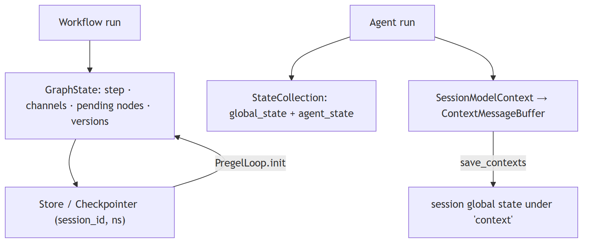
Code anchors
| Code anchor | What it points to |
|---|---|
agent-core/openjiuwen/core/session/internal/agent.py:36 |
AgentSession.init creates StateCollection; :74 create_workflow_session passes global state into InMemoryState |
agent-core/openjiuwen/core/session/state/agent_state.py:9 |
agent StateCollection; :34 get_state |
agent-core/openjiuwen/core/session/state/workflow_state.py:12 |
workflow StateCollection (io/global/comp/workflow); :100 get_workflow_state; :151 get_state |
agent-core/openjiuwen/core/context_engine/context/context.py:64 |
SessionModelContext; :1519 save_state(); :1526 load_state |
agent-core/openjiuwen/core/graph/store/base.py:31 |
GraphState dataclass; :41 Store ABC |
agent-core/openjiuwen/core/graph/pregel/engine.py:39 |
PregelLoop.init reads saved state; :44 restore path |
agent-core/openjiuwen/core/session/checkpointer/persistence.py:299 |
_get_state_to_save; :352 WorkflowStorage.save |
agent-core/openjiuwen/core/context_engine/context_engine.py:589 |
save_contexts |
7. How would you pause an agent mid-execution and resume it later with the same state
Mechanism advanced
TL;DR. Pause needs a durable checkpoint at a safe boundary or a first-class interrupt that unwinds the run preserving state; resume reloads the checkpoint or replays the suspended step.
Key points.
- Durable checkpoint or interrupt signal.
- Preserve state while unwinding.
- Resume by reload or replay.
Concept. Pause requires either a durable checkpoint at a safe boundary or a first-class interrupt/suspend signal that unwinds the run while preserving state. Resume reloads the checkpoint (or replays the suspended step) and continues. The hard part is non-idempotent side effects: replay must be safe.
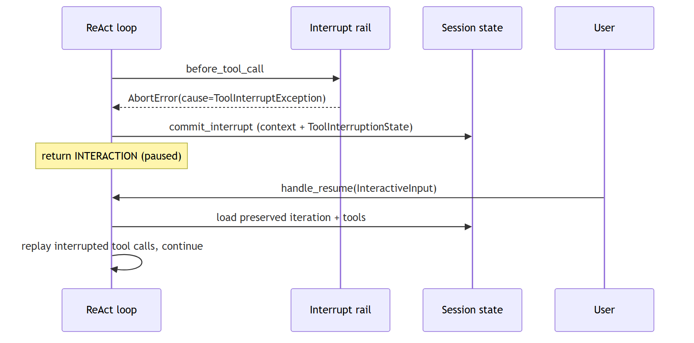
In Jiuwen. Two mechanisms. Interrupt rails abort the current tool call by raising an abort error carrying the cause; the framework re-raises it and the ReAct loop catches it, saving conversation context plus the interruption state and returning an interaction result; on resume it replays the interrupted calls with the user's input. The workflow/graph path instead uses checkpointing to pause and restore.
Under the hood
Implementation
Two mechanisms. Interrupt rails abort the current tool call by raising AbortError(cause=ToolInterruptException(...)); the callback framework re-raises the cause, the ReAct loop catches it, and ToolInterruptHandler.commit_interrupt saves conversation context plus a ToolInterruptionState into session state, returning an INTERACTION result. On resume, handle_resume replays the interrupted tool calls with the user's InteractiveInput. Workflow/graph pause uses checkpointing: CompiledGraph._invoke calls checkpointer.pre_workflow_execute (recover or require input) and post_workflow_execute (save on interrupt, clear on completion); PregelLoop snapshots channels/pending nodes on error and restores them in init; provider harnesses expose explicit pause()/resume() gated on HarnessCapability.PAUSE_RESUME.
Code anchors
| Code anchor | What it points to |
|---|---|
agent-core/openjiuwen/harness/rails/interrupt/interrupt_base.py:237 |
_raise_interrupt; :243 raises AbortError(cause=ToolInterruptException); re-raised at agent-core/openjiuwen/core/runner/callback/framework.py:1172 |
agent-core/openjiuwen/core/single_agent/interrupt/handler.py:279 |
commit_interrupt; :310 handle_resume; :326 uses preserved state.iteration |
agent-core/openjiuwen/core/single_agent/interrupt/state.py:32 |
ToolInterruptionState |
agent-core/openjiuwen/core/session/checkpointer/persistence.py:803 |
pre_workflow_execute; :824 recover on InteractiveInput; :860 post_workflow_execute; :876 save on TASK_STATUS_INTERRUPT |
agent-core/openjiuwen/core/graph/graph.py:315 |
CompiledGraph._invoke; :326 pre; :334 pregel.run; :346 post |
agent-core/openjiuwen/core/graph/pregel/engine.py:45 |
_is_resume; :174 _save_state_on_error; :39 restore in init |
agent-core/openjiuwen/core/context_engine/context/context.py:1519/1526 |
save_state/load_state |
agent-core/openjiuwen/harness/deep_agent.py:2491/2516 |
load_state/save_state; agent-core/openjiuwen/harness_providers/io_adapter.py:299/308 — pause()/resume() |
8. How would you add human-in-the-loop approval before a specific step executes
Mechanism advanced
TL;DR. Route sensitive steps through a permission check returning allow/ask/deny, pause on ask, surface a confirm payload, resume with the decision, and remember/persist rules; fail closed on unknown.
Key points.
- Permission check: allow/ask/deny.
- Pause on ask; resume with the decision.
- Persist allow rules; fail closed.
Concept. Route sensitive steps through a permission check that returns allow/ask/deny, pause on ask, surface a confirm payload, resume with the decision, and optionally remember or persist allow rules. Fail closed: unknown should mean "ask", not "allow".
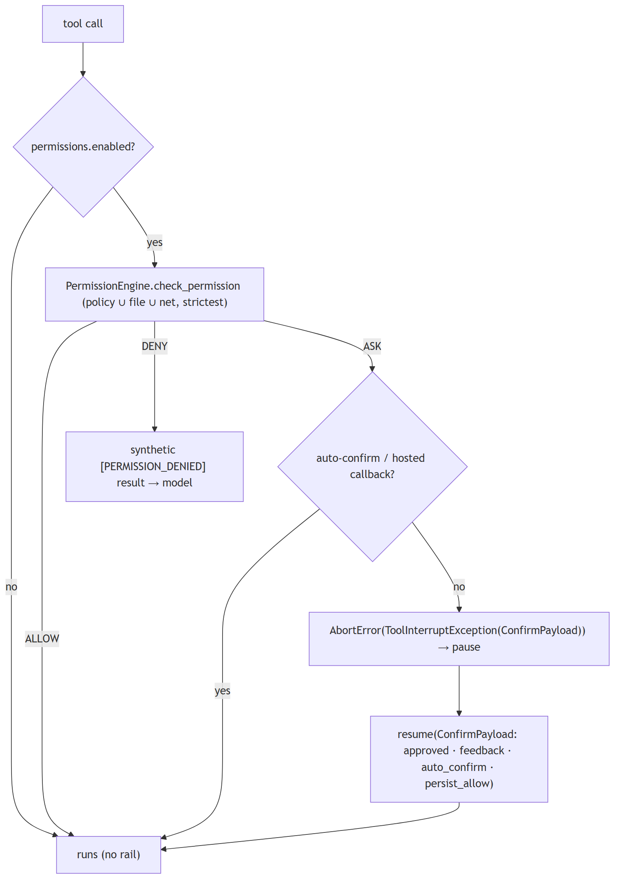
In Jiuwen. Every tool call passes through a permission interrupt rail that calls the permission engine, which merges the tiered tool policy, file guard, and net rules. If the decision is 'ask', it pauses with a confirmation payload and resumes with the user's answer, optionally remembering the rule. Unknown actions are floored to ask (fail closed).
Under the hood
Implementation
Tool execution passes through PermissionInterruptRail (subclass of ConfirmInterruptRail ← BaseInterruptRail), which overrides before_tool_call and intercepts every tool. On first entry it calls PermissionEngine.check_permission, which merges the tiered tool policy, file guard, and net guard with "strictest wins" and returns ALLOW/ASK/DENY. ALLOW approves; DENY returns a synthetic [PERMISSION_DENIED] tool result; ASK either hits a session auto-confirm key, delegates to a hosted confirmation callback, or raises AbortError(cause=ToolInterruptException(ConfirmPayload.to_schema())) to pause. Resume parses a ConfirmPayload (approved, feedback, auto_confirm, persist_allow); the rail can remember session-scoped or persist an allow rule. Plan-mode exit uses a separate PlanApprovalRail, and AskUserRail reuses the same mechanism for ask_user.
Code anchors
| Code anchor | What it points to |
|---|---|
agent-core/openjiuwen/harness/rails/security/tool_security_rail.py:57 |
PermissionInterruptRail; :186 before_tool_call; :404 resolve_interrupt; :486 ALLOW; :494 DENY; :510-563 hosted confirm + persist; :594-598 ASK → interrupt; :729 _store_auto_confirm |
agent-core/openjiuwen/harness/security/permission_engine/core.py:272 |
check_permission; :414 build_permission_interrupt_rail; :426 permissions.enabled gate |
agent-core/openjiuwen/harness/security/permission_engine/toolguard/tool_policy.py:588 |
evaluate_tiered_policy; :502 ASK fallback; :385 DENY precedence |
agent-core/openjiuwen/harness/security/permission_engine/models.py:19 |
PermissionLevel; :52 PermissionConfirmResponse |
agent-core/openjiuwen/harness/rails/interrupt/interrupt_base.py:243 |
_raise_interrupt; :248 _skip_tool; :269 _get_user_input |
agent-core/openjiuwen/harness/rails/interrupt/confirm_rail.py:16 |
ConfirmPayload; :57 resolve_interrupt |
agent-core/openjiuwen/core/single_agent/interrupt/handler.py:310 |
handle_resume; :358 re-commit; :384 restore auto-confirm |
agent-core/openjiuwen/harness/deep_agent.py:767-782 |
auto-mount when permissions["enabled"]; jiuwenswarm/jiuwenswarm/agents/harness/code/rails/code_plan_approval_rail.py:74 — PlanApprovalRail; agent-core/openjiuwen/harness/rails/interrupt/ask_user_rail.py:29 — AskUserRail |
9. What's the difference between short-term and long-term memory in an agent
Compare basic
TL;DR. Short-term is the live working context (recent turns, task state) for the next call; long-term is durable cross-session knowledge retrieved on demand.
Key points.
- Short-term: live context window.
- Long-term: durable, cross-session.
- Long-term is retrieved into the turn.
Concept. Short-term is the live working context (recent turns, current task state) needed for the next model call. Long-term is durable knowledge distilled across sessions — facts, preferences, summaries — retrieved on demand.
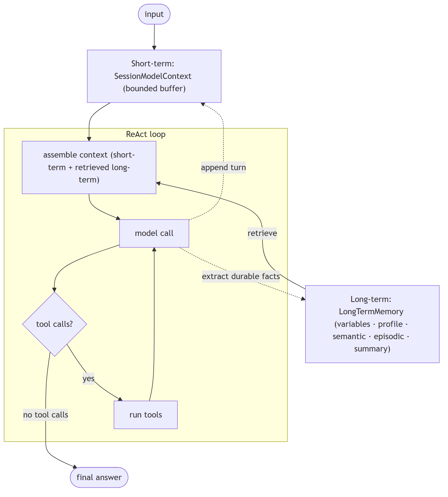
In Jiuwen. Short-term is the session model context with a bounded message buffer; long-term is a typed memory store (variables, user profile, semantic and episodic memory, summaries). The product adds a SQLite/FTS5 hybrid index over markdown memory files, and retrieval into the current turn happens through a memory-search tool.
Under the hood
Implementation
Short-term is SessionModelContext with a bounded message buffer. Long-term is LongTermMemory, with a typed taxonomy (VARIABLE, USER_PROFILE, SEMANTIC_MEMORY, EPISODIC_MEMORY, SUMMARY). The product adds a SQLite/FTS5 hybrid index over markdown memory files.
Code anchors
| Code anchor | What it points to |
|---|---|
agent-core/openjiuwen/core/context_engine/context/context.py:44 |
SessionModelContext |
agent-core/openjiuwen/core/context_engine/context/message_buffer.py:11 |
ContextMessageBuffer |
agent-core/openjiuwen/core/memory/long_term_memory.py:69 |
LongTermMemory |
agent-core/openjiuwen/core/memory/manage/mem_model/memory_unit.py |
memory type taxonomy |
jiuwenswarm/jiuwenswarm/agents/harness/common/memory/manager.py:56 |
product hybrid memory index |
10. How do you decide what to store in memory versus what to discard
Compare intermediate
TL;DR. Keep durable, reused, preference-like, decision-relevant facts; discard transient chatter and stale/contradicted entries — usually extract candidates with an LLM, then dedupe/resolve.
Key points.
- Keep durable/reused/preference facts.
- Discard transient and contradicted.
- LLM extract then dedupe/resolve.
Concept. Keep durable, reused, preference-like, and decision-relevant facts; discard transient chatter, redundant restatements, and stale/contradicted entries. Most systems extract candidates with an LLM, then dedupe and resolve conflicts against existing memory.
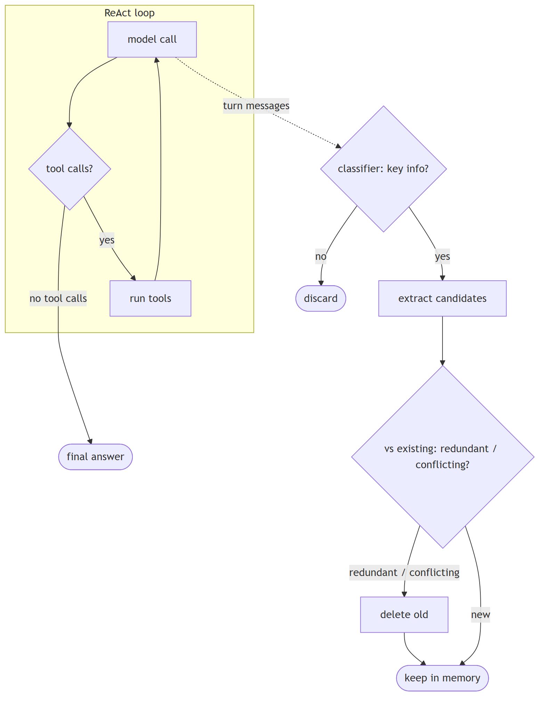
In Jiuwen. An LLM classifier decides whether a turn has key information, and extraction runs only if flagged. Writes dedupe and resolve conflicts: the memory manager searches related old memories, classifies them as redundant, conflicting, or none, deletes redundant or conflicting entries, and writes the new one. So storing is a classify-then-reconcile pipeline, not append-only.
Under the hood
Implementation
An LLM classifier decides whether a turn has key information, and extraction runs only if flagged. Writes dedupe and resolve conflicts: FragmentMemoryManager.add_memories searches related old memories, invokes MemUpdateChecker (REDUNDANT/CONFLICTING/NONE), deletes redundant/conflicting IDs, and adds survivors. The product's sweeper prompt explicitly treats "output [] as the norm" and forbids generic/static facts.
Code anchors
| Code anchor | What it points to |
|---|---|
agent-core/openjiuwen/core/memory/process/extract/memory_analyzer.py:26 |
key-information classifier |
agent-core/openjiuwen/core/memory/process/extract/generation.py:102 |
extraction gated on the classifier |
agent-core/openjiuwen/core/memory/manage/index/fragment_memory_manager.py:125 |
dedupe + conflict resolution |
agent-core/openjiuwen/core/memory/manage/update/mem_update_checker.py:22 |
CheckResult |
jiuwenswarm/jiuwenswarm/agents/harness/common/memory/dreaming/sweeper.py:617 |
discard rules |
11. How do you prevent memory from growing unbounded across a long session
Mechanism intermediate
TL;DR. Bound on multiple axes: hard-drop/truncate oldest context, offload large blobs, compact old tool results, summarize/archive, and cap stored long-term entries.
Key points.
- FIFO/truncate oldest context.
- Offload large blobs; compact tool results.
- Summarize/archive; cap long-term entries.
Concept. Bound it on multiple axes: hard-drop or truncate the oldest context, offload large blobs, compact old tool results, summarize and archive, and cap the number of stored long-term entries.
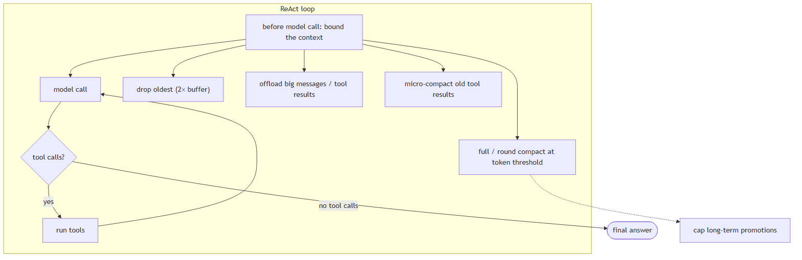
In Jiuwen. A bounded FIFO buffer drops the oldest messages beyond twice the limit; budget guarding truncates oversized content with head/tail previews; offloaders move large messages and tool results out of context; compactors run at token thresholds; and long-term promotion is capped per session. Growth is bounded on several axes at once.
Under the hood
Implementation
A bounded FIFO buffer drops the oldest messages beyond twice the limit. Budget guarding truncates oversized content with head/tail previews. Offloaders move large messages and tool results out of context. Compactors run at token thresholds. Long-term promotion is capped per session.
Code anchors
| Code anchor | What it points to |
|---|---|
agent-core/openjiuwen/core/context_engine/context/message_buffer.py:71 |
drop oldest beyond 2× |
agent-core/openjiuwen/core/context_engine/processor/budget_guard.py:88 |
head/tail truncation |
agent-core/openjiuwen/core/context_engine/processor/offloader/message_offloader.py:71 |
offload large messages |
agent-core/openjiuwen/core/context_engine/processor/offloader/tool_result_budget_processor.py:81 |
tool-result budget |
agent-core/openjiuwen/core/context_engine/processor/compressor/micro_compact_processor.py:47 |
micro compaction |
agent-core/openjiuwen/core/context_engine/processor/compressor/full_compact_processor.py:183 |
full compaction |
agent-core/openjiuwen/core/context_engine/processor/compressor/round_level_compressor.py:96 |
round compaction |
jiuwenswarm/jiuwenswarm/agents/harness/common/memory/dreaming/sweeper.py:36 |
per-session promotion caps |
12. How would you summarize conversation history without losing important details
Mechanism advanced
TL;DR. Keep recent turns verbatim; summarize older turns into a structured note (goal, decisions, files/state, open tasks, next step) rather than free prose; re-inject durable state.
Key points.
- Recent turns verbatim.
- Structured summary, not free prose.
- Re-inject durable state (plan, status, files).
Concept. Keep the most recent turns verbatim, summarize older turns into a structured note (goal, decisions, files/state, open tasks, next step) rather than free prose, and re-inject the durable state (plan, task status, key artifacts) separately so it is not lost inside a summary. Boundary markers separate summary from live turns, and the summary should be updated incrementally so each pass only processes new messages.
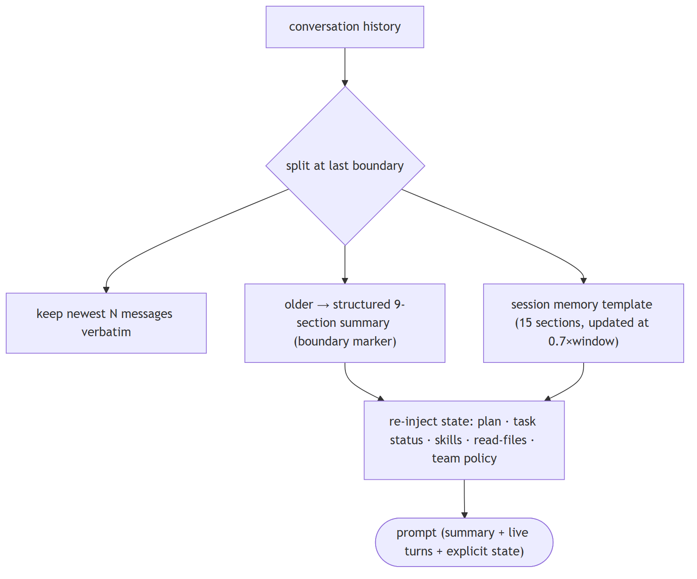
In Jiuwen. Compaction replaces the active segment with a structured summary plus a boundary system message, then re-injects high-value state as separate messages: plan and task status, recent skill reads, read-file snapshots, and the team policy. The structured form preserves details that free prose would lose.
Under the hood
Implementation
Compaction replaces the active segment with a structured summary plus a boundary SystemMessage, then re-injects high-value state as separate UserMessage blocks: plan/task status, recent skill-read rounds, read-file snapshots, and the team collaboration policy (returned as messages so they escape state_snapshot_max_chars truncation). FullCompactProcessor uses a 9-section summary prompt and boundary markers ([FULL_COMPACT_BOUNDARY], [FULL_COMPACT_STATE], [SESSION_MEMORY_BOUNDARY]). The session-memory path runs a background updater triggered at 0.7×context window, summarizes only completed API rounds, writes to a pending file and atomically renames on commit, and records notes_upto_message_id so only un-summarized messages are processed next time.
Code anchors
| Code anchor | What it points to |
|---|---|
agent-core/openjiuwen/core/context_engine/processor/compressor/full_compact_processor.py:69 |
BASE_COMPACT_PROMPT; :167 boundary markers; :342 _build_replacement_messages(); :774 build_reinjected_state_messages() |
agent-core/openjiuwen/core/context_engine/processor/compressor/util.py:242 |
build_skill_reinjected_content(); :294 build_task_status_reinjected_content(); :105 build_team_policy_reinjected_messages() |
agent-core/openjiuwen/core/context_engine/context/session_memory_manager.py:37 |
15-section template; :738 should_update(); :824 _update_background(); :529 invalidate_session_memory_anchor() |
agent-core/openjiuwen/core/context_engine/processor/forked/compressor/reinjection/builders.py:29 |
forked reinjection builders |
13. Memory-augmented agent
Mechanism intermediate
TL;DR. Context across sessions: short-term is the active window; long-term is a store of past interactions; retrieval decides what long-term memory returns.
Key points.
- Short-term = active context window.
- Long-term = persisted store.
- Retrieval brings memory back.
Concept. context across sessions, not just one conversation. Short-term memory is the active context window; long-term memory is a vector store/DB of past interactions; retrieval decides what long-term memory is relevant to the current turn. Used for: personal assistants, customer support.
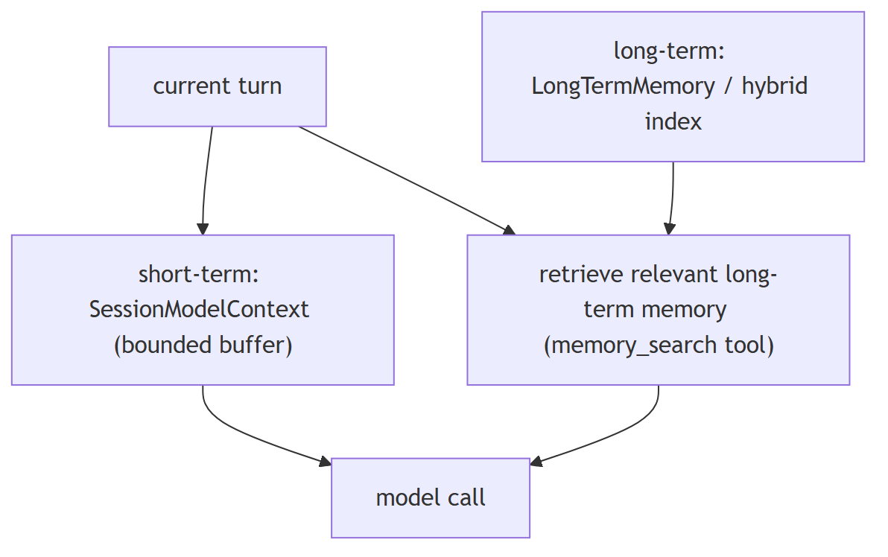
In Jiuwen. Short-term is a session model context with a bounded message buffer; long-term is a typed memory taxonomy, and the product adds a SQLite/FTS5 hybrid index over markdown memory files. Retrieval-into-turn is a tool the model calls.
Under the hood
Implementation
Short-term is SessionModelContext with a bounded ContextMessageBuffer; long-term is LongTermMemory with a typed taxonomy, and the product adds a SQLite/FTS5 hybrid index over markdown memory files. Retrieval-into-turn is a tool the model calls (memory_search), and MemoryRail suppresses it when daily memory is auto-loaded.
Code anchors
| Code anchor | What it points to |
|---|---|
agent-core/openjiuwen/core/context_engine/context/context.py:44 |
SessionModelContext; agent-core/openjiuwen/core/context_engine/context/message_buffer.py:11 — ContextMessageBuffer |
agent-core/openjiuwen/core/memory/long_term_memory.py:69 |
LongTermMemory |
jiuwenswarm/jiuwenswarm/agents/harness/common/memory/manager.py:183/805 |
product hybrid index |
jiuwenswarm/jiuwenswarm/agents/harness/common/tools/memory_tools.py:167 |
memory_search; agent-core/openjiuwen/harness/prompts/sections/memory.py:14 — when to call |
14. How do you detect and prevent memory contamination — an agent remembering incorrect facts?
Mechanism intermediate
TL;DR. Wrong facts written to memory compound across sessions; prevent via write gating, and fix via targeted overwrite — not full wipes.
Key points.
- Prevention: write only from verified outputs; tag with provenance.
- Fix: memory_update(id) for targeted overwrite; memory_delete_by_category for broad wipe.
- Gap: no confidence gate before write, no versioning, no audit loop.
Concept. Memory contamination happens when wrong or hallucinated facts are written to long-term memory and then retrieved into future turns, compounding errors. Prevention: write to memory only from verified/confirmed outputs (not raw model scratchpads); tag memory entries with provenance (source, confidence, timestamp); implement targeted invalidation — delete or overwrite specific wrong entries by key rather than wiping all memory; use versioning so you can roll back. Detection: run a periodic audit query that cross-checks stored facts against the authoritative source.
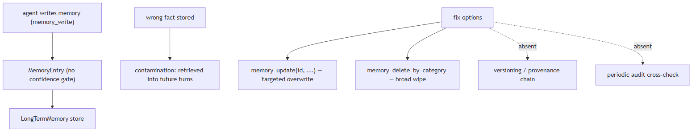
In Jiuwen. LongTermMemory (agent-core/openjiuwen/core/memory/long_term_memory.py:69) stores MemoryEntry objects with category/source metadata. memory_update(id) allows targeted overwrite of an existing entry; memory_delete_by_category allows broad wipe. No confidence gate before memory_write, no versioning chain, no provenance trail, and no periodic audit query against an authoritative source.
Under the hood
Implementation
LongTermMemory stores typed memory units with metadata fields (category, source). Memory is written by the agent via MemoryRail and the memory_write / memory_update tools. There is no confidence gate before writing — any output the model chooses to commit is stored. memory_update allows targeted overwrite of an existing entry by id, which is the closest analogue to targeted invalidation; a full category wipe is memory_delete_by_category. There is no versioning or provenance chain, no periodic audit loop, and no automatic invalidation when the retrieval pipeline returns a conflicting fact.
Code anchors
| Code anchor | What it points to |
|---|---|
agent-core/openjiuwen/core/memory/long_term_memory.py:69 |
LongTermMemory and entry schema |
jiuwenswarm/jiuwenswarm/agents/harness/common/tools/memory_tools.py:167 |
memory_write/memory_update/memory_delete_by_category |
jiuwenswarm/jiuwenswarm/agents/harness/common/rails/memory_forbidden_rail.py:1 |
memory suppression gate |
agent-core/openjiuwen/harness/prompts/sections/memory.py:14 |
when/what to write |